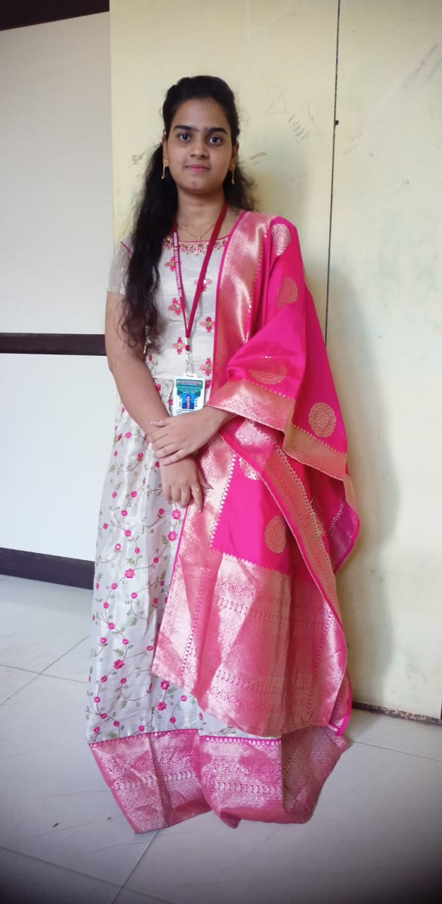

Vinjamuru Harshitha
Student at Sree Venkateswara College of Engineering
If you want to talk to us, connect on LinkedIn:
Connect on LinkedInStudent at Sree Venkateswara College of Engineering
If you want to talk to us, connect on LinkedIn:
Connect on LinkedIn